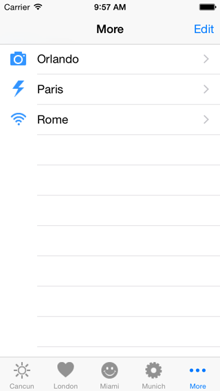

|
 |
 |
 |
|
 |
|
 |
|
 |
|
 |
 |
Learning Objectives
Table of Contents
Step 0: Earlier Phases of the Software Life Cycle
We assume that earlier phases of the Software Life Cycle have been completed. See Dr. Balci's Software Life Cycle. The life cycle processes Problem Formulation, Requirements Engineering, Architecting, and Design are assumed to be completed. In this tutorial, we focus on the Programming process.
Step 1: Application Functionality Specification
A Tab Bar, displayed on the bottom of the screen, provides the major modes of operation of an iOS app. Upon launch of this tutorial app, the tab bar shows the first 4 modes of operation out of 7 and displays a More button to list the remaining 3 in another view. Placing the More button to divide up the modes of operation is automatically provided.
Tapping London in the tab bar displays the London scene shown below with 4 buttons. Tapping each of the Boat Cruise, Monuments, and Museums buttons displays the corresponding scene. Tapping the Survey button displays an Action Sheet shown below. The user's answer to the question is reflected in the message box.
Tapping Miami in the tab bar displays the Miami scene shown below.
Tapping Munich in the tab bar displays the Munich scene shown below with 3 buttons. Tapping each of the Churches, Marienplatz, and Oktoberfest buttons displays the corresponding scene.
Tapping More in the tab bar lists the remaining modes of operation in a table (UITableView) with selectable rows as shown in the More scene below.
The Edit functionality for rearranging the tab bar options is automatically provided. Clicking the Edit button displays the view in the screenshot on the right below. You can tap the icon of an option that is not shown on the tab bar, drag it and drop it on top of an existing icon to replace it. For example, in the screenshot below on the right, the icon Paris can be dragged and dropped on top of the icon Miami to replace it on the main tab bar display. All of this automatic functionality is provided by the UITabBarController class. However, the change is not saved when the application is terminated. You need to do some programming to preserve the change.
 Tapping Orlando, Paris, or Rome in the More scene above displays the corresponding scene shown below.
Step 2: Application Navigation Structure
An iOS application's navigation structure or logical flow from one scene to another is created in the storyboard file. The storyboard shown below describes the navigation structure of the TourGuide tutorial app.
The iOS applications are designed using the following Design Patterns: (1) Model-View-Controller (MVC), (2) Delegation, and (3) Target-Action. We will use all of the three design patterns in the development of this app.
We establish an app's navigation structure using view controllers (VCs) as illustrated in the storyboard above. The following types of VCs can be used:
To learn more about View Controllers, please read View Controller Programming Guide for iOS.
Step 3: Creation of a New Project
- Launch Xcode. Create a new project by selecting File → New → Project...
- Select iOS → Application → Tabbed Application template. Click Next.
- In the Choose options for your new project dialog,
- Enter Product Name as TourGuide.
- Enter Your Name as Organization Name.
- Enter com.yourname as your company/organization unique identifier. Note that domain names, e.g., apple.com, ibm.com, microsoft.com, are unique.
- The string com.yourname.TourGuide becomes the Bundle ID for your application uniquely identifying it in the App Store for distribution.
- Select Swift as the programming language to use.
- Select iPhone for the Devices, implying that your app will run on those iPhone and iPod Touch devices that can run iOS 8.0 or higher. Note that some old iOS devices cannot be upgraded to version 8.0.
- Click Next. In the File Browser window displayed,
- Select a location on your hard disk to store your project.
- Uncheck Source Control to disable version control. Click Create to create your project.
General Project Settings
- Click the project name TourGuide in the project navigator to display the General project settings.
- Click the Team pop-up menu and select your iOS Developer Program account name from the list displayed. If you have not added your iOS Developer Program account, select Add an Account...
- Uncheck all device orientations except Portrait.
Clean Up
The Tabbed Application template creates two View Controllers and four images. We need to delete these resources since we want to create our own.
- In Xcode Project Navigator, in the group called TourGuide: Select FirstViewController.swift and SecondViewController.swift files, and press the Delete key to delete them. Select Move to Trash in the dialog box.
- Click Images.xcassets → Command-click first and second to select them both, then press the Delete key to delete them.
Copying Files into Your Project
- Download the TourGuide_files.zip file.
- Uncompress it.
- Click Images.xcassets in the project navigator to display the Image Assets Pane.
- Drag and drop the following downloaded folders into the Image Assets Pane:
- App Icons
- Images
- Launch Images
- Tab Bar Icons
- Images dragged and dropped in the Image Assets Pane are stored in the Media Library.
Setting the App Icons
- Click AppIcon in the Image Assets Pane.
- Select iOS 7.0 and Later Sizes for iPhone under the Attributes Inspector.
- Click the Media Library icon in the Library Selector Bar to show all of the image assets for the project.
- Drag and drop an app icon to its corresponding placeholder in the AppIcon assets area.
- You can inspect the size, filename, and other attributes of a selected app icon using the Attributes Inspector.
Setting the Launch Images
- Click LaunchImage in the Image Assets Pane.
- Select iOS 7.0 and Later for iPhone Portrait under the Attributes Inspector.
- Click the Media Library icon in the Library Selector Bar to show all of the image assets for the project.
- Drag and drop a launch image to its corresponding placeholder in the LaunchImage assets area.
- You can inspect the size, filename, and other attributes of a selected image using the Attributes Inspector.
Step 4: MVC Design Pattern: View – User Interface Development
Click the Main.storyboard file to display the storyboard. Right click the storyboard background and select 50% to zoom out.
We need to clean up the two scenes automatically generated by the Tabbed Application template.
We want to create our own as follows.
Every individual scene in a storyboard has its own scene dock directly above the canvas as shown in the above screenshot. The scene dock displays the scene object, first responder object, and the exit object in icon view.
In view of the navigation structure shown in Step 2, follow the steps above to create:
The Tab Bar Controller should look like the following:
Step 5: iPhone 5 Screen Sizes of UI Objects in the Interface Builder
Definitions of Points and Pixels
Apple introduced Retina Display starting with iPhone 4 with high pixel density with twice as many screen pixels as previous iPhones. The Interface Builder in Xcode uses a coordinate system based on points (pts) as opposed to pixels. Apple explains it as follows:
"In iOS there is a distinction between the coordinates you specify in your drawing code and the pixels of the underlying device. When using native drawing technologies such as Quartz, UIKit [e.g., UIScreen, UIView, UIImage], and Core Animation, the drawing coordinate space and the view's coordinate space are both logical coordinate spaces, with distances measured in points. These logical coordinate systems are decoupled from the device coordinate space used by the system frameworks to manage the pixels onscreen." [Drawing and Printing Guide for iOS]
The Figure below shows the heights of commonly used bars and available spaces for a UI on a 4-inch iPhone 5 screen.

Step 6: Showing a Picture in a View
"In iOS 7 [and higher], the status bar is transparent, and other bars—that is, navigation bars, tab bars, toolbars, search bars, and scope bars—are translucent. As a general rule, you want to make sure that content fills the area behind the bars in your app." [Apple]
To display a picture in a view, an object must hold that picture. That object is the Image View object.
Surprised? Only the first four tab bar items are shown with a More option to see the other items in another view. Click the tab bar items to navigate and test your app's functionality. We decomposed our app's functionality horizontally into 7 modes of operation. We intend to vertically decompose London and Munich functionality and therefore, we used a Navigation Controller object to manage the vertical decomposition functionality views. To make sense of horizontal and vertical decomposition, look at the Storyboard by turning it 90 degrees clockwise.
Step 7: London Scene Development
Creation of the Toolbar
Creation and Connection of the View Controllers for Boat Cruise, Monuments, and Museums
A Navigation Controller uses a stack for managing its views. When London is the current view and the user taps the Boat Cruise toolbar button, the Boat Cruise view is Pushed into the stack and is displayed since the view on the top of the stack is always displayed. When the user taps the Back button on the Boat Cruise view, the Boat Cruise view is Popped revealing the view underneath, which is the London view, and since it becomes the view on the top of the stack now, it is displayed. Navigation controller uses a stack with the Push and Pop actions in managing its views.
User Interaction Specification
- Select Editor → Align → Horizontal Center in Container
- Control drag from the Survey button to the message box Label, let go the mouse, and select Vertical Spacing.
- Select Editor → Pin → Width
- Select Editor → Pin → Height
Now, we need to apply the Target-Action Design Pattern and connect the label and button to our code. That means that, we need to write code to control the user interactions with these UI objects. That code must be placed within the View Controller object that is designated to control the user interaction with this view (scene). We need to create a custom View Controller (UIViewController) class to hold the code for the interaction control.
Step 8: LondonViewController Class Creation
This connection stores the object reference (unique ID) of the UILabel object into the instance variable messageBox, which we use in our code.
- Select Main.storyboard. Bring up the Assistant Editor to show the LondonViewController.swift file as shown in the screenshot above.
- Control-drag from the Survey UIButton object to the LondonViewController.swift file where you want the code to be generated.
- Release the mouse button and do the following:
- Select Action from the Connection pop-up menu,
- Enter surveyButtonTapped as the name of the action method,
- Select UIButton for the Type so that we strongly type the object reference, and
- Click Connect to generate the code.
Copy and paste the documented code given below. Carefully study the code, understand what it is doing, and learn from it!
LondonViewController.swift file:
//
// LondonViewController.swift
// TourGuide
//
// Created by Osman Balci on 8/6/14.
// Copyright (c) 2014 Osman Balci. All rights reserved.
//
import UIKit
class LondonViewController: UIViewController, UIActionSheetDelegate {
// Object reference pointing to the messageBox UILabel object
@IBOutlet var messageBox: UILabel!
// This method is invoked when the user taps the Survey button
@IBAction func surveyButtonTapped(sender: UIButton) {
// Create an action sheet
var actionSheet = UIActionSheet()
// Set action sheet properties
actionSheet.delegate = self
actionSheet.title = "How much do you like London?"
actionSheet.addButtonWithTitle("Very Much") // Button Index = 0
actionSheet.addButtonWithTitle("Somewhat") // Button Index = 1
actionSheet.addButtonWithTitle("Not So Much") // Button Index = 2
actionSheet.addButtonWithTitle("Cancel") // Button Index = 3
actionSheet.cancelButtonIndex = 3
// Show action sheet
actionSheet.showInView(self.view)
}
override func viewDidLoad() {
super.viewDidLoad()
// Do any additional setup after loading the view.
}
override func didReceiveMemoryWarning() {
super.didReceiveMemoryWarning()
// Dispose of any resources that can be recreated.
}
// UIActionSheetDelegate Protocol Method
func actionSheet(actionSheet: UIActionSheet!, clickedButtonAtIndex buttonIndex: Int) {
switch buttonIndex {
case 0:
messageBox.text = "You like London Very Much!"
case 1:
messageBox.text = "You like London Somewhat!"
case 2:
messageBox.text = "You like London Not So Much!"
case 3:
break
default:
messageBox.text = "Something went wrong!"
}
}
}
Build and run your application and try the London scene functionality.
Step 9: Munich Scene Development
- Select Editor → Align → Horizontal Center in Container
- Select Editor → Pin → Top Space to Superview.
- Select Editor → Pin → Width
- Select Editor → Pin → Height
Repeat the above steps to create a Button object for Marienplatz and Oktoberfest as shown in the sceeenshot below.
Creation and Connection of the View Controllers for Churches, Marienplatz, and Oktoberfest
Step 10: Build and Run Your Application
- Make sure that all of your files are saved.
- Click the device selection pop-up menu for the iOS Simulator on the top left corner of the Xcode window and select iPhone 5S.
- Click the Run button on the top left corner of the Xcode window to execute your app under the iOS Simulator.
- Test the navigation structure of the app.
- Observe how colors change under the navigation and tab bars as translucent.